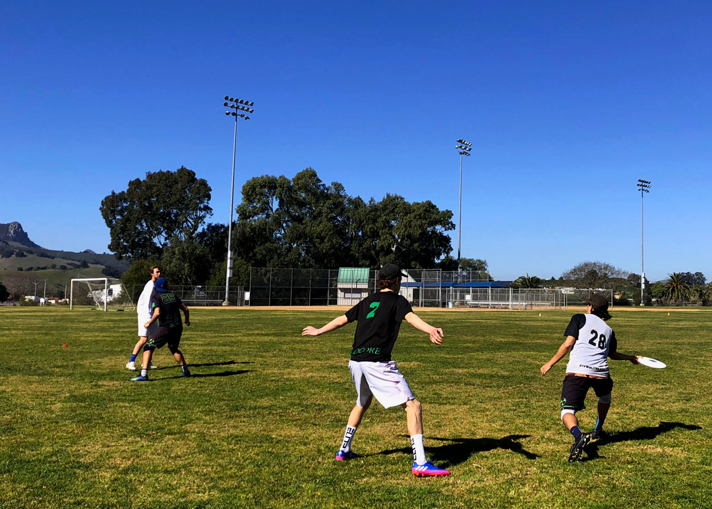

1 / 10

Feb. 8 - SLOCORE finishes up their weekly Saturday practice with a huddle and recap on what went well, and what they can keep improving upon. Right after practice ends, the team shouts in unison, “Good luck!” to the club women’s rugby team who is playing on the other field.
2 / 10
Feb 8 - Head Coach Cody Mills explains the upcoming drill they will run. The team is preparing for their second invitational of the season, President’s Day Invite 2020, which is held in La Jolla. SLOCORE won the tournament last season, and are looking to defend their title.
3 / 10

Feb 8 - Agriculture Systems Management senior Morgan Sommer attempts a flick to a White teammate. Sommer, a captain for this season, reflects on falling short in the semi-finals of the 2019 College Championships. “It’s a little bit sad, but it’s a relief. Like, we made it, we did our best, and that’s what we came up with,” Sommer said.
4 / 10
Feb. 6 - Assistant coach and SLOCORE alumnus Caleb Merriam previews the next drill: a scrimmage with stopping points to work situationally in the middle of the field.
5 / 10

Feb. 8 - Captain Justin “JT” Ting reaches out to catch a floated backhand pass. As the three hour practice comes to a close, the players work through fatigue to get one last scrimmage in.
6 / 10
Feb 8 - The dark team identifies who they’ll be guarding before executing the pull to the white team.
7 / 10
Feb 10 - The team listens intently to Merriam after a short water break. Business administration junior Matt Miller, pictured in the red shirt, looks back on last year’s loss in the semi-finals. “It hurt, seeing the amount of grind and effort that everyone on the team put in together, all just fall short in the second to last game that we could get to… definitely hurts,” Miller said.
8 / 10

Feb 8 - Business administration sophomore Jake Thorne sees a positive in last year’s semi-final loss. “Although it was not the result we wanted, we were proud to be the best Cal Poly men’s ultimate team in program history,” Thorne said.
9 / 10
Feb 8 - Sophomore Calvin Brown looks on as the team practices getting separation from defenders. Brown, the 2019 UltiWorld D-1 Rookie of the Year, is sitting out of practice today with illness, but the captain shows up to support nonetheless.
10 / 10

Feb 8 - The team celebrates another successful training session with a cheer led by Thorne. “Aye hold up hold up hold up, y’all better stop all that foolishness, ‘cause Core’s gonna BREAK!”